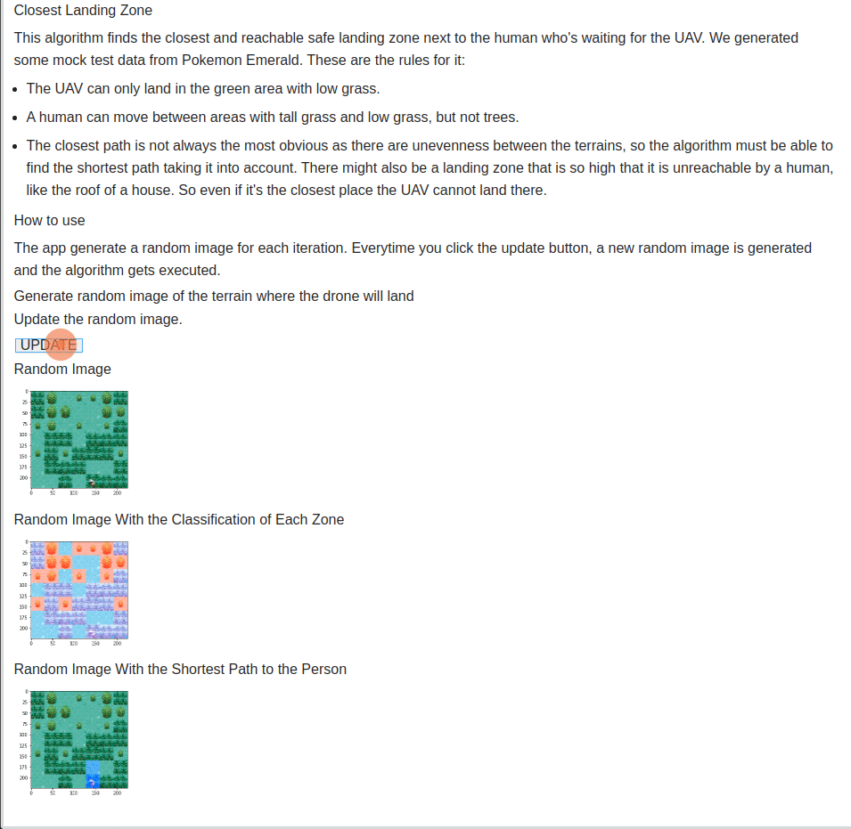

Landing Zone Detection
Determine which of the reachable detected landing zones is closest to the person.
List Number: X
Discipline Subject: Graphs II
Students
| Number | Student |
|---|---|
| 17/0146251 | João Lucas Zarbiélli |
| 19/0046945 | Leonardo Michalski Miranda |
About
App Gif

Video (pt-br, download link)
How to run
Language: Python.
Frameworks: OpenCV; Jupyter Voilà; BinderHub.
Access the app or the notebook with the BinderHub server.
How to use
References
Jupyter et al., "Binder 2.0 - Reproducible, Interactive, Sharable Environments for Science at Scale." Proceedings of the 17th Python in Science Conference. 2018. doi://10.25080/Majora-4af1f417-011